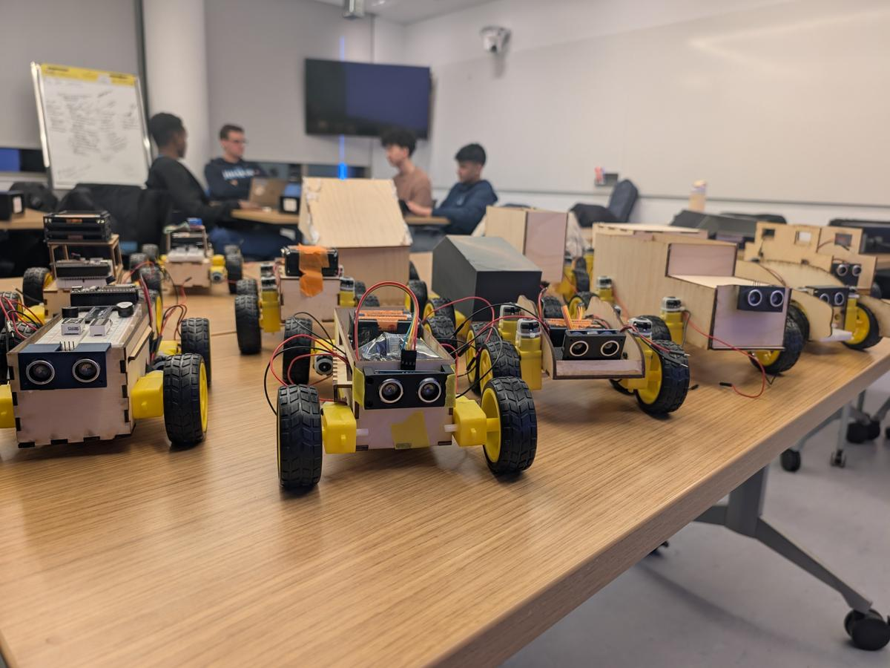

What went well?
Name the successes and the strengths behind them, so the team keeps doing those on purpose.
Class 8 · Week 8 · Fall 2026
Race day ends with a conversation. Look back on the build with your team, decide what to keep, and leave with actions you will use on the next project.

Why we stop and look back
You hold it at the end of a project or a phase. Everyone looks at what happened and agrees on what to change. It is the last step of the build, not an extra one.
Name the successes and the strengths behind them, so the team keeps doing those on purpose.
Name what cost you time, parts, or runs. A problem you can describe is a problem you can plan around.
Write the lesson in a sentence you would pass to the next team.
The process
Write first, decide as a team, and finish with something you can hand in.
Three or more post-its per category, one idea on each.
Cluster the similar ones and name each cluster.
Dot stickers on the items that matter most.
One or two top items per category. Talk about why.
Turn the discussion into actions with names on them.
Write it up and hand it in with the Robo Challenge.
Write before you talk. Ideas from the quietest person land in the pile first, before the loudest story sets the agenda.
Step 1 · Write
Five to ten minutes each, alone, before anyone speaks.
The rules
The three piles
“The left wheel spun backwards when we pushed up” teaches something. “The wiring was confusing” does not.
Steps 2 and 3 · Group and vote
Grouping turns a board of post-its into a handful of themes. Voting tells you which themes the whole team cares about.
Step 2
Step 3
A dot is a quiet vote. Everyone’s view lands on the board, without anyone needing to win the room.
Steps 4 and 5 · Discuss and act
The discussion explains the list. The action items are the only part that reaches the next build.
Take the one or two most-voted items in each category. Ask why it happened, not only what happened. Agree on the cause, or say clearly that you see it differently.
Each action names what changes and who owns it. Put a name and a date next to it, so the next build can start with it.
Could a teammate start it without asking you? If not, it is still a wish. Good: “Test the robot on the competition surface at least twice.” Not: “Do more testing.”
Step 6 · Document
One shared document, written while the discussion is fresh. It is what your team reads before the next project starts.
The document
Hand it in
The team document is not the individual reflection. The milestone reflection is yours alone, due next week at go.tufts.edu/reflect.
Your turn
Quiet writing first. Three post-its minimum in each category, one item per post-it.
Name the wins and the strengths behind them.
Name what cost you time, parts, or runs.
Write the lesson you would pass on.
Before you go
Then finish the document and submit it with the Robo Challenge. The individual milestone reflection is due next week, at go.tufts.edu/reflect.
Next class · Thu, Nov 5: the final project begins with a concept pitch.
Where to find us
Office hours
go.tufts.edu/meet_tvdv
Email
thomas.van_de_velde@tufts.edu
Course materials
tuftsmaker.github.io/ENT-164